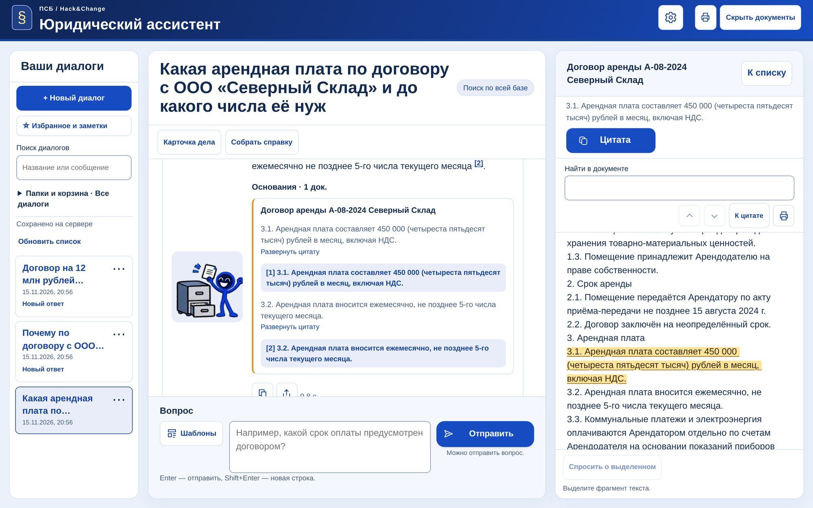
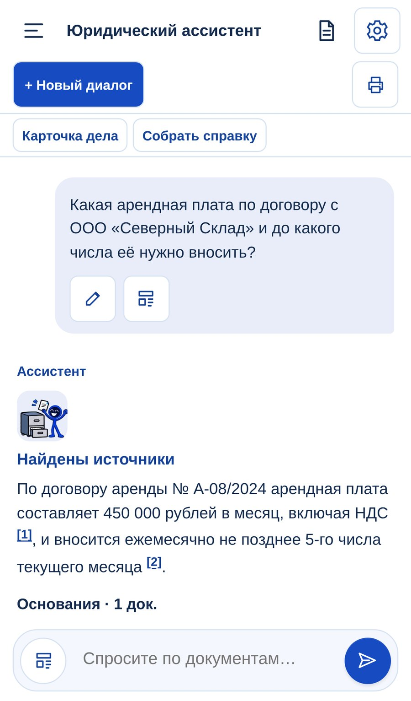
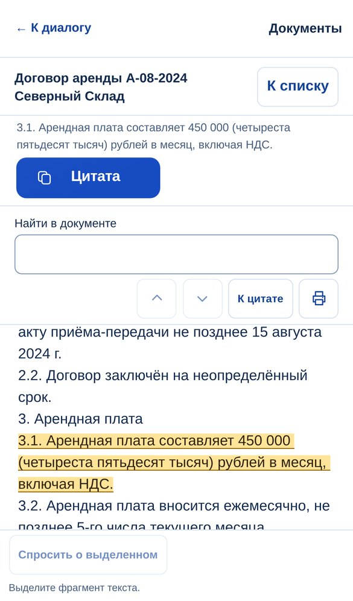
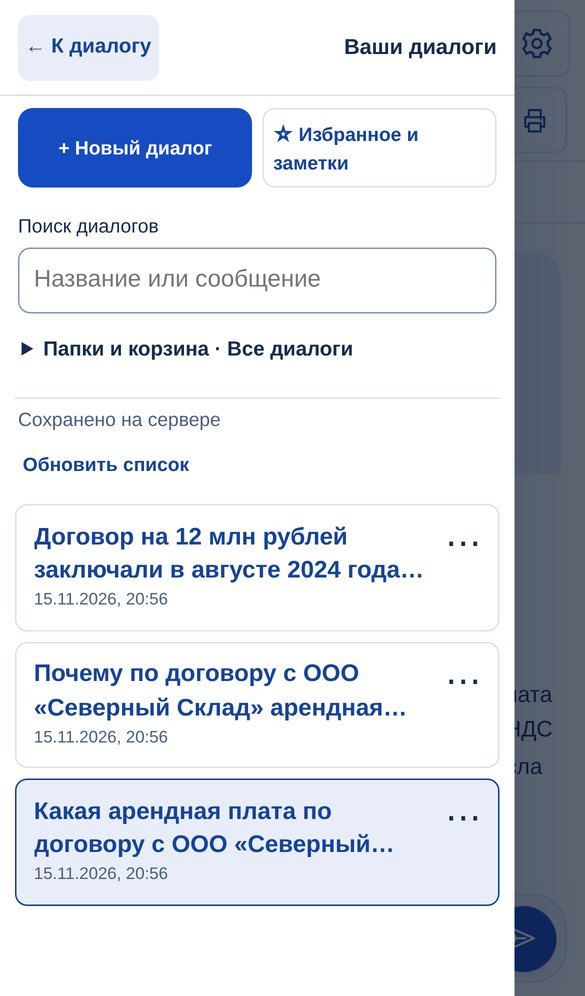
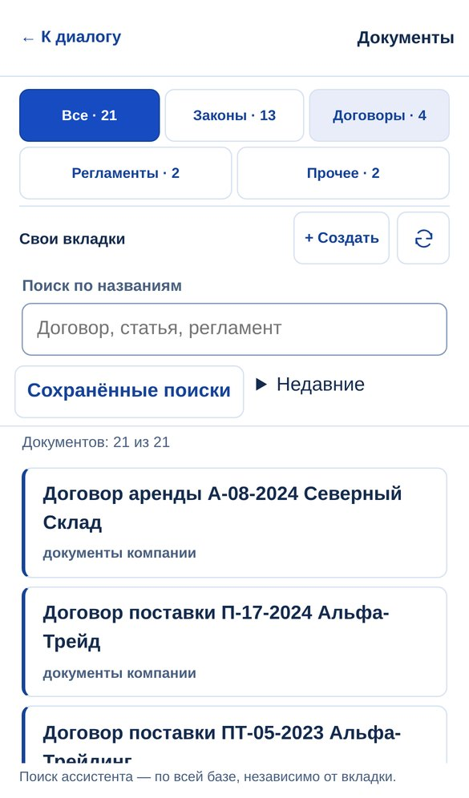
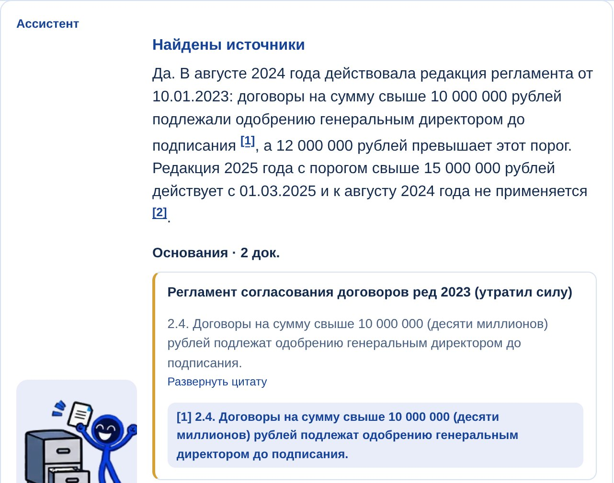

Юридический RAG-ассистент: ответы только по базе документов, с дословными основаниями, подсветкой положения в полном тексте и обоснованным отказом, если сведений нет.
docker compose up --build -d --wait → http://127.0.0.1:8000.env — LLM_BASE_URL, LLM_API_KEY, LLM_MODEL).Подробный сценарий, переменные и порты — README, разделы «Быстрый старт» и «Проверка основного сценария».
База кейса: 21 документ (8 документов компании, 13 законов в действующей редакции), 1113 фрагментов.
Модель выбирает только ID положений, дословный текст подставляет приложение из корпуса.
Числа, даты, пункты, ограничения и редакция сверяются с источником; при сомнении — отказ, а не догадка.
По дате события выбирается действовавшая редакция регламента и допсоглашения к договору.
Поддельные «SYSTEM», «руководитель подтвердил», инструкции внутри документов не меняют ответ.
Ответ, частичный ответ, уточнение, «нет в базе», отказ и техническая ошибка различаются явно.
Положение открывается в полном тексте с подсветкой; можно спросить о выделенном фрагменте.
История на сервере, ветки диалога, карточка дела, шаблоны, справка из ответов в PDF, очередь вопросов.
Один вызов модели на вопрос в пакетном режиме, запуск одной командой Docker, ядро без внешних зависимостей.

Скриншот локального запуска интерфейса из репозитория. Текст ответа — запись живого прогона 14.11.2026 (демо-вопрос № 1), воспроизведённая без вызова модели.
| Проверка | Что ловит |
|---|---|
| Существующие ID | ссылки на несуществующие положения и документы |
| Дословность | цитату подставляет приложение из корпуса, модель её не пишет |
| Числа, даты, пункты | каждое значение текста есть в положениях, в вопросе или в записанном расчёте |
| Границы вывода | сведения вне выбранных положений, выдуманные разделы, ложное «документа нет» |
| Ограничения | «не вправе», «только», «не может превышать» сохраняются в выводе |
| Редакция на дату | положение не действовало на дату события → ответ отклоняется |
| Отсылки | статья, на которую ссылается норма, отсутствует → частичный ответ с названием пробела |
| Инъекции | инструкции внутри документов и вопроса не получают полномочий |
В вебе отдельный вызов модели оценивает каждое положение (поддерживает ли, применимо ли) и готовый текст. Одобрение модели не отменяет провал программной проверки.
Повтор с расширенным поиском; затем — только исходные положения без текста модели или фиксированный отказ. Не более 5 вызовов модели на вопрос.
Техническая ошибка показывается отдельным статусом и никогда не выдаётся за отсутствие сведений.
Вопрос → ответ со ссылками → клик по источнику → подсвеченное положение в полном тексте → копирование точной цитаты.
Не ясно, какой договор или период? Статус «Нужно уточнение» и форма с недостающими полями; «Продолжить» дописывает вопрос.
Ответ на последнюю реплику с учётом истории. Правка старого вопроса или «Продолжить в ветке» создают отдельный диалог, исходный не меняется.
Выделить текст в документе → «Спросить о выделенном» → «Объяснить пункт» или «Условия и исключения». Черновик виден, отправляет пользователь.
Карточка дела (договор, контрагент, дата, сумма) и шаблоны вопросов. «Собрать справку» объединяет готовые ответы с источниками для печати или PDF.
Пока идёт ответ, можно отправить следующие; менять порядок, править, удалять, «Остановить» и «Продолжить». Всё хранится на сервере.
Для защиты: вопрос → источник и подсвеченная цитата → вопрос по выделению → избранное и заметка → карточка дела → ветка → очередь и остановка → тот же диалог на другом устройстве.
Карточка дела и заметки не передаются модели и не становятся источниками. История и рабочие материалы требуют авторизующего прокси и включённой серверной истории.





«Договор на 12 млн рублей заключали в августе 2024 года. Нужно ли было одобрение генерального директора?» — применена редакция регламента 2023 года, действовавшая на дату события.
18 демо-вопросов — за 38,5 секунды, то есть около двух секунд на вопрос в два потока. Модель вызывается один раз на вопрос; второй раз — только если ответ не прошёл проверку.
Замер 14.11.2026 на публичном DeepSeek, не на конкурсном прокси.
Регрессии ядра на каждый найденный тип ошибки, веб-тесты API, проверки JavaScript, браузерные сценарии Playwright (мобильная вёрстка, история, очередь, подборки, справка), независимые валидаторы. Без платного API.
Web CI на PR и push: тесты, сборка и HTTP-проверка контейнера, поиск секретов, сканирование образа. Полный Security: Gitleaks, Bandit, CodeQL, pip-audit, Hadolint, Trivy. Инженерный аудит OWASP от 15.11.2026.
| Область | Меры |
|---|---|
| Доступ | HTTPS и вход на прокси; проверка секрета и владельца объектов на сервере; порт приложения только на localhost |
| Браузер | CSP, запрет framing, nosniff, проверка Origin/Fetch Metadata для изменяющих запросов |
| Контейнер | non-root, read-only root, cap_drop ALL, no-new-privileges, лимиты 2 GiB / 2 CPU, read-only корпус |
| Секреты | ключ модели только на сервере, в браузер не передаётся; тексты сообщений и ключи не пишутся в логи |
Вход через корпоративный SSO, отдельные учётные записи, MFA, роли и доступ к документам по ролям.
Добавление договоров и допсоглашений через веб с проверкой формата, версией корпуса и автоматической переиндексацией.
Подтягивание карточки договора и контрагента из системы документооборота вместо ручного заполнения.
Просмотр двух документов или редакций рядом с подсветкой изменённых пунктов.
Несколько процессов, распределённая очередь, внешняя БД вместо SQLite, мониторинг и оповещения безопасности.
Регулярная оценка на расширенном наборе вопросов с юристами; продвижение подписанного образа с обязательными проверками и автоматическим откатом.
Уже есть и может включаться настройкой: эмбеддинги bge-m3 и реранкер через прокси организаторов (по умолчанию реранкер выключен: прирост на замерах в пределах одного вопроса).
Инженер и архитектор решения. Основной объём проекта — от идеи до сдачи.
Участие в разработке веб-интерфейса.
Поддержка команды на протяжении хакатона.
Нужны Git и Docker Compose v2, свободный порт 8000.
git clone https://github.com/Moonwuk/grounded-legal-rag.git cd grounded-legal-rag cp .env.example .env # заполнить LLM_* docker compose up --build -d --wait # http://127.0.0.1:8000
Без ключа доступны каталог и просмотр документов, интерфейс сообщает, что модель не настроена. Ключ остаётся на сервере.
Ключи, пароли демо, рабочая .env и пользовательская SQLite в материалы не входят.
| Переменная | По умолчанию | Назначение |
|---|---|---|
| LLM_BASE_URL, LLM_API_KEY, LLM_MODEL | пусто | OpenAI-совместимый API модели; для конкурса — адрес, ключ и модель организаторов |
| WEB_BIND, WEB_PORT | 127.0.0.1, 8000 | адрес и порт приложения на хосте |
| CHAT_PROXY_TOKEN | пусто | общий секрет с авторизующим прокси; включает серверную историю |
| EMB_MODEL, TOP_K, MAX_TOKENS | пусто, 6, 8192 | эмбеддинги (без них — BM25), число кандидатов поиска, лимит ответа модели |